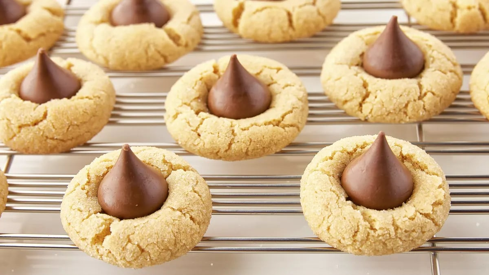

Classic Peanut Butter Blossom Cookies

Prep Time: 60 Min Total: 60 Min Servings: 36 Ingredients: 10
INGREDIENTS
- 1/2 cup granulated sugar
- 1/2 cup packed brown sugar
- 1/2 cup creamy peanut butter
- 1/2 cup butter, softened
- 1 egg
- 1 1/2 cups Gold Medal™ All Purpose Flour
- 3/4 teaspoon baking soda
- 1/2 teaspoon baking powder
- Additional granulated sugar
- About 36 HERSHEY'S KISSES milk chocolate candies, unwrapped
INSTRUCTIONS
- Heat oven to 375°F. In large bowl, beat 1/2 cup granulated sugar, the brown sugar, peanut butter, butter and egg with electric mixer on medium speed, or mix with spoon, until well blended. Stir in flour, baking soda and baking powder until dough forms.
- Shape dough into 1-inch balls; roll in additional granulated sugar. On ungreased cookie sheets, place about 2 inches apart.
- Bake 8 to 10 minutes or until edges are light golden brown. Immediately press 1 milk chocolate candy in center of each cookie. Remove from cookie sheets to cooling rack.